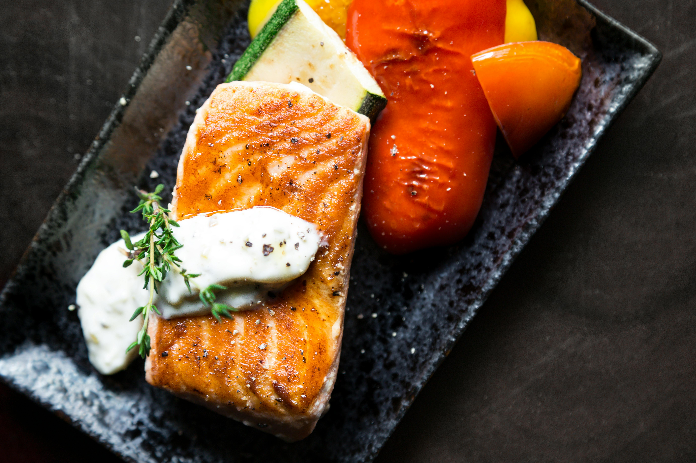

Grilled Salmon
Home

Grilled Salmon
Perfectly grilled salmon fillets with a crispy exterior and tender, flaky interior,
seasoned simply with lemon and herbs. A healthy and elegant protein that's elegant enough
for dinner guests yet easy enough for weeknight meals.
Recipe Details
- Prep Time: 10 minutes
- Cook Time: 12 minutes
- Total Time: 22 minutes
- Servings: 4
- Difficulty: Easy
Ingredients
- 4 salmon fillets
- 3 tbsp olive oil
- 2 lemons, sliced
- 2 cloves garlic, minced
- 1 tspn dried dill
- 1/2 tspn salt
- 1/4 tspn black pepper
- Fresh parsley
Preparation
Prep
- Pat thawed salmon fillets dry with paper towels
- Mix olive oil, minced garlic, dill, salt, and pepper in a small bowl
- Brush salmon fillets with the oil mixture on both sides
Grilling
- Preheat grill to medium-high heat
- Oil up grill grates to prevent sticking
- Place salmon skin-side up on grill
- Cook for 6-7 minutes without moving
- Flip carefully and cook skin-side down for another 5-6 minutes until sealed
- Salmon is done when it flakes easily with a fork
Serving
- Transfer salmon to plate
- Top with fresh lemon slices
- Garnish with fresh parsley
- Serve immediately while warm
- Enjoy!